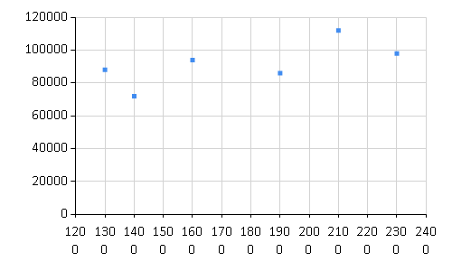
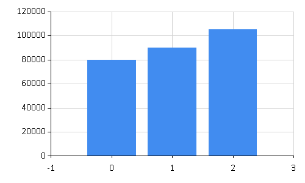
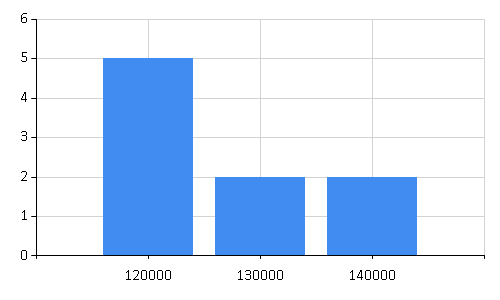
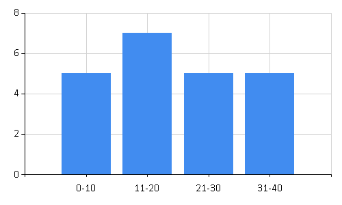

Bar Charts
F# code for Bar Charts unit.
1: 2: 3: 4: 5: 6: 7: |
[<Measure>] type sqft [<Measure>] type dollar let sizes = [1300<sqft>;1400<sqft>;1600<sqft>;1900<sqft>;2100<sqft>;2300<sqft>] let prices1 = [88000<dollar>;72000<dollar>;94000<dollar>;86000<dollar>;112000<dollar>;98000<dollar>] open Deedle let df1 = Frame(["size"; "price"], [ Series.ofValues sizes; Series.ofValues prices1]) |
size |
price |
|
|---|---|---|
0 |
1300 |
88000 |
1 |
1400 |
72000 |
2 |
1600 |
94000 |
3 |
1900 |
86000 |
4 |
2100 |
112000 |
5 |
2300 |
98000 |
1: 2: |
open FSharp.Charting Chart.Point(Seq.zip sizes prices1) |

Is this Linear? No
How much to pay for a 2200 sqft house? Using Interpolation we got 10500, but the number is not trusted because there are Noise.
1:
|
112000 + (98000-112000)/2 |
Using bar chart to average out the noise.
1: 2: 3: 4: 5: 6: |
let combinedPrices1 = prices1 |> Seq.mapi (fun i p -> i,p) |> Array.ofSeq |> Array.partition (fun (i,p) -> i%2=0) ||> Array.mapi2 (fun i x y -> i,(snd(x)+snd(y))/2) |
[|(0, 80000); (1, 90000); (2, 105000)|]
1:
|
Chart.Column(combinedPrices1) |

Histogram is a special-case of bar chart. Both aggregate data, but bar chart is showing 2D data while histogram is presenting frequencies in 1D.
1: 2: 3: 4: 5: 6: 7: 8: 9: |
let incomes = [132754;137192;122177;147121;143000;126010;129200;124312;128132] let frequencies = incomes |> Seq.fold (fun (x,y,z) i -> if i < 130000 then (x+1,y,z) elif i < 140000 then (x,y+1,z) else (x,y,z+1) ) (0,0,0) |> (fun (x,y,z) -> ["120000",x;"130000",y;"140000",z]) |
[("120000", 5); ("130000", 2); ("140000", 2)]
1:
|
Chart.Column(frequencies) |

1: 2: 3: 4: 5: 6: 7: 8: 9: 10: |
let ages = [21;17;9;27;35;4;32;12;12;14;38;9;19;22;14;21;3;8;31;15;33;29] let agesDist = ages |> Seq.fold (fun (a,b,c,d) i -> if i < 11 then (a+1,b,c,d) elif i < 21 then (a,b+1,c,d) elif i < 31 then (a,b,c+1,d) else (a,b,c,d+1) ) (0,0,0,0) |> (fun (a,b,c,d) -> ["0-10",a;"11-20",b;"21-30",c;"31-40",d]) |
[("0-10", 5); ("11-20", 7); ("21-30", 5); ("31-40", 5)]
1:
|
Chart.Column(agesDist) |

Multiple items
type MeasureAttribute =
inherit Attribute
new : unit -> MeasureAttribute
Full name: Microsoft.FSharp.Core.MeasureAttribute
--------------------
new : unit -> MeasureAttribute
type MeasureAttribute =
inherit Attribute
new : unit -> MeasureAttribute
Full name: Microsoft.FSharp.Core.MeasureAttribute
--------------------
new : unit -> MeasureAttribute
[<Measure>]
type sqft
Full name: 04-BarCharts.sqft
type sqft
Full name: 04-BarCharts.sqft
[<Measure>]
type dollar
Full name: 04-BarCharts.dollar
type dollar
Full name: 04-BarCharts.dollar
val sizes : int<sqft> list
Full name: 04-BarCharts.sizes
Full name: 04-BarCharts.sizes
val prices1 : int<dollar> list
Full name: 04-BarCharts.prices1
Full name: 04-BarCharts.prices1
namespace Deedle
val df1 : Frame<int,string>
Full name: 04-BarCharts.df1
Full name: 04-BarCharts.df1
Multiple items
module Frame
from Deedle
--------------------
type Frame =
static member CreateEmpty : unit -> Frame<'R,'C> (requires equality and equality)
static member FromArray2D : array:'T [,] -> Frame<int,int>
static member FromColumns : cols:Series<'TColKey,Series<'TRowKey,'V>> -> Frame<'TRowKey,'TColKey> (requires equality and equality)
static member FromColumns : cols:Series<'TColKey,ObjectSeries<'TRowKey>> -> Frame<'TRowKey,'TColKey> (requires equality and equality)
static member FromColumns : columns:seq<KeyValuePair<'ColKey,ObjectSeries<'RowKey>>> -> Frame<'RowKey,'ColKey> (requires equality and equality)
static member FromColumns : columns:seq<KeyValuePair<'ColKey,Series<'RowKey,'V>>> -> Frame<'RowKey,'ColKey> (requires equality and equality)
static member FromColumns : rows:seq<Series<'ColKey,'V>> -> Frame<'ColKey,int> (requires equality)
static member FromRecords : values:seq<'T> -> Frame<int,string>
static member FromRecords : series:Series<'K,'R> -> Frame<'K,string> (requires equality)
static member FromRowKeys : keys:seq<'K> -> Frame<'K,string> (requires equality)
...
Full name: Deedle.Frame
--------------------
type Frame<'TRowKey,'TColumnKey (requires equality and equality)> =
interface IDynamicMetaObjectProvider
interface INotifyCollectionChanged
interface IFsiFormattable
interface IFrame
new : names:seq<'TColumnKey> * columns:seq<ISeries<'TRowKey>> -> Frame<'TRowKey,'TColumnKey>
private new : rowIndex:IIndex<'TRowKey> * columnIndex:IIndex<'TColumnKey> * data:IVector<IVector> -> Frame<'TRowKey,'TColumnKey>
member AddColumn : column:'TColumnKey * series:ISeries<'TRowKey> -> unit
member AddColumn : column:'TColumnKey * series:seq<'V> -> unit
member AddColumn : column:'TColumnKey * series:ISeries<'TRowKey> * lookup:Lookup -> unit
member AddColumn : column:'TColumnKey * series:seq<'V> * lookup:Lookup -> unit
...
Full name: Deedle.Frame<_,_>
--------------------
new : names:seq<'TColumnKey> * columns:seq<ISeries<'TRowKey>> -> Frame<'TRowKey,'TColumnKey>
module Frame
from Deedle
--------------------
type Frame =
static member CreateEmpty : unit -> Frame<'R,'C> (requires equality and equality)
static member FromArray2D : array:'T [,] -> Frame<int,int>
static member FromColumns : cols:Series<'TColKey,Series<'TRowKey,'V>> -> Frame<'TRowKey,'TColKey> (requires equality and equality)
static member FromColumns : cols:Series<'TColKey,ObjectSeries<'TRowKey>> -> Frame<'TRowKey,'TColKey> (requires equality and equality)
static member FromColumns : columns:seq<KeyValuePair<'ColKey,ObjectSeries<'RowKey>>> -> Frame<'RowKey,'ColKey> (requires equality and equality)
static member FromColumns : columns:seq<KeyValuePair<'ColKey,Series<'RowKey,'V>>> -> Frame<'RowKey,'ColKey> (requires equality and equality)
static member FromColumns : rows:seq<Series<'ColKey,'V>> -> Frame<'ColKey,int> (requires equality)
static member FromRecords : values:seq<'T> -> Frame<int,string>
static member FromRecords : series:Series<'K,'R> -> Frame<'K,string> (requires equality)
static member FromRowKeys : keys:seq<'K> -> Frame<'K,string> (requires equality)
...
Full name: Deedle.Frame
--------------------
type Frame<'TRowKey,'TColumnKey (requires equality and equality)> =
interface IDynamicMetaObjectProvider
interface INotifyCollectionChanged
interface IFsiFormattable
interface IFrame
new : names:seq<'TColumnKey> * columns:seq<ISeries<'TRowKey>> -> Frame<'TRowKey,'TColumnKey>
private new : rowIndex:IIndex<'TRowKey> * columnIndex:IIndex<'TColumnKey> * data:IVector<IVector> -> Frame<'TRowKey,'TColumnKey>
member AddColumn : column:'TColumnKey * series:ISeries<'TRowKey> -> unit
member AddColumn : column:'TColumnKey * series:seq<'V> -> unit
member AddColumn : column:'TColumnKey * series:ISeries<'TRowKey> * lookup:Lookup -> unit
member AddColumn : column:'TColumnKey * series:seq<'V> * lookup:Lookup -> unit
...
Full name: Deedle.Frame<_,_>
--------------------
new : names:seq<'TColumnKey> * columns:seq<ISeries<'TRowKey>> -> Frame<'TRowKey,'TColumnKey>
Multiple items
module Series
from Deedle
--------------------
type Series =
static member ofNullables : values:seq<Nullable<'a0>> -> Series<int,'a0> (requires default constructor and value type and 'a0 :> ValueType)
static member ofObservations : observations:seq<'a0 * 'a1> -> Series<'a0,'a1> (requires equality)
static member ofOptionalObservations : observations:seq<'K * 'a1 option> -> Series<'K,'a1> (requires equality)
static member ofValues : values:seq<'a0> -> Series<int,'a0>
Full name: Deedle.FSharpSeriesExtensions.Series
--------------------
type Series<'K,'V (requires equality)> =
interface IFsiFormattable
interface ISeries<'K>
new : pairs:seq<KeyValuePair<'K,'V>> -> Series<'K,'V>
new : keys:seq<'K> * values:seq<'V> -> Series<'K,'V>
new : index:IIndex<'K> * vector:IVector<'V> * vectorBuilder:IVectorBuilder * indexBuilder:IIndexBuilder -> Series<'K,'V>
member After : lowerExclusive:'K -> Series<'K,'V>
member Aggregate : aggregation:Aggregation<'K> * observationSelector:Func<DataSegment<Series<'K,'V>>,KeyValuePair<'TNewKey,OptionalValue<'R>>> -> Series<'TNewKey,'R> (requires equality)
member Aggregate : aggregation:Aggregation<'K> * keySelector:Func<DataSegment<Series<'K,'V>>,'TNewKey> * valueSelector:Func<DataSegment<Series<'K,'V>>,OptionalValue<'R>> -> Series<'TNewKey,'R> (requires equality)
member AsyncMaterialize : unit -> Async<Series<'K,'V>>
member Before : upperExclusive:'K -> Series<'K,'V>
...
Full name: Deedle.Series<_,_>
--------------------
new : pairs:seq<System.Collections.Generic.KeyValuePair<'K,'V>> -> Series<'K,'V>
new : keys:seq<'K> * values:seq<'V> -> Series<'K,'V>
new : index:Indices.IIndex<'K> * vector:IVector<'V> * vectorBuilder:Vectors.IVectorBuilder * indexBuilder:Indices.IIndexBuilder -> Series<'K,'V>
module Series
from Deedle
--------------------
type Series =
static member ofNullables : values:seq<Nullable<'a0>> -> Series<int,'a0> (requires default constructor and value type and 'a0 :> ValueType)
static member ofObservations : observations:seq<'a0 * 'a1> -> Series<'a0,'a1> (requires equality)
static member ofOptionalObservations : observations:seq<'K * 'a1 option> -> Series<'K,'a1> (requires equality)
static member ofValues : values:seq<'a0> -> Series<int,'a0>
Full name: Deedle.FSharpSeriesExtensions.Series
--------------------
type Series<'K,'V (requires equality)> =
interface IFsiFormattable
interface ISeries<'K>
new : pairs:seq<KeyValuePair<'K,'V>> -> Series<'K,'V>
new : keys:seq<'K> * values:seq<'V> -> Series<'K,'V>
new : index:IIndex<'K> * vector:IVector<'V> * vectorBuilder:IVectorBuilder * indexBuilder:IIndexBuilder -> Series<'K,'V>
member After : lowerExclusive:'K -> Series<'K,'V>
member Aggregate : aggregation:Aggregation<'K> * observationSelector:Func<DataSegment<Series<'K,'V>>,KeyValuePair<'TNewKey,OptionalValue<'R>>> -> Series<'TNewKey,'R> (requires equality)
member Aggregate : aggregation:Aggregation<'K> * keySelector:Func<DataSegment<Series<'K,'V>>,'TNewKey> * valueSelector:Func<DataSegment<Series<'K,'V>>,OptionalValue<'R>> -> Series<'TNewKey,'R> (requires equality)
member AsyncMaterialize : unit -> Async<Series<'K,'V>>
member Before : upperExclusive:'K -> Series<'K,'V>
...
Full name: Deedle.Series<_,_>
--------------------
new : pairs:seq<System.Collections.Generic.KeyValuePair<'K,'V>> -> Series<'K,'V>
new : keys:seq<'K> * values:seq<'V> -> Series<'K,'V>
new : index:Indices.IIndex<'K> * vector:IVector<'V> * vectorBuilder:Vectors.IVectorBuilder * indexBuilder:Indices.IIndexBuilder -> Series<'K,'V>
static member Series.ofValues : values:seq<'a0> -> Series<int,'a0>
namespace FSharp
namespace FSharp.Charting
type Chart =
static member Area : data:seq<#value> * ?Name:string * ?Title:string * ?Labels:#seq<string> * ?Color:Color * ?XTitle:string * ?YTitle:string -> GenericChart
static member Area : data:seq<#key * #value> * ?Name:string * ?Title:string * ?Labels:#seq<string> * ?Color:Color * ?XTitle:string * ?YTitle:string -> GenericChart
static member Bar : data:seq<#value> * ?Name:string * ?Title:string * ?Labels:#seq<string> * ?Color:Color * ?XTitle:string * ?YTitle:string -> GenericChart
static member Bar : data:seq<#key * #value> * ?Name:string * ?Title:string * ?Labels:#seq<string> * ?Color:Color * ?XTitle:string * ?YTitle:string -> GenericChart
static member BoxPlotFromData : data:seq<#key * #seq<'a2>> * ?Name:string * ?Title:string * ?Color:Color * ?XTitle:string * ?YTitle:string * ?Percentile:int * ?ShowAverage:bool * ?ShowMedian:bool * ?ShowUnusualValues:bool * ?WhiskerPercentile:int -> GenericChart (requires 'a2 :> value)
static member BoxPlotFromStatistics : data:seq<#key * #value * #value * #value * #value * #value * #value> * ?Name:string * ?Title:string * ?Labels:#seq<string> * ?Color:Color * ?XTitle:string * ?YTitle:string * ?Percentile:int * ?ShowAverage:bool * ?ShowMedian:bool * ?ShowUnusualValues:bool * ?WhiskerPercentile:int -> GenericChart
static member Bubble : data:seq<#value * #value> * ?Name:string * ?Title:string * ?Labels:#seq<string> * ?Color:Color * ?XTitle:string * ?YTitle:string * ?BubbleMaxSize:int * ?BubbleMinSize:int * ?BubbleScaleMax:float * ?BubbleScaleMin:float * ?UseSizeForLabel:bool -> GenericChart
static member Bubble : data:seq<#key * #value * #value> * ?Name:string * ?Title:string * ?Labels:#seq<string> * ?Color:Color * ?XTitle:string * ?YTitle:string * ?BubbleMaxSize:int * ?BubbleMinSize:int * ?BubbleScaleMax:float * ?BubbleScaleMin:float * ?UseSizeForLabel:bool -> GenericChart
static member Candlestick : data:seq<#value * #value * #value * #value> * ?Name:string * ?Title:string * ?Labels:#seq<string> * ?Color:Color * ?XTitle:string * ?YTitle:string -> CandlestickChart
static member Candlestick : data:seq<#key * #value * #value * #value * #value> * ?Name:string * ?Title:string * ?Labels:#seq<string> * ?Color:Color * ?XTitle:string * ?YTitle:string -> CandlestickChart
...
Full name: FSharp.Charting.Chart
static member Area : data:seq<#value> * ?Name:string * ?Title:string * ?Labels:#seq<string> * ?Color:Color * ?XTitle:string * ?YTitle:string -> GenericChart
static member Area : data:seq<#key * #value> * ?Name:string * ?Title:string * ?Labels:#seq<string> * ?Color:Color * ?XTitle:string * ?YTitle:string -> GenericChart
static member Bar : data:seq<#value> * ?Name:string * ?Title:string * ?Labels:#seq<string> * ?Color:Color * ?XTitle:string * ?YTitle:string -> GenericChart
static member Bar : data:seq<#key * #value> * ?Name:string * ?Title:string * ?Labels:#seq<string> * ?Color:Color * ?XTitle:string * ?YTitle:string -> GenericChart
static member BoxPlotFromData : data:seq<#key * #seq<'a2>> * ?Name:string * ?Title:string * ?Color:Color * ?XTitle:string * ?YTitle:string * ?Percentile:int * ?ShowAverage:bool * ?ShowMedian:bool * ?ShowUnusualValues:bool * ?WhiskerPercentile:int -> GenericChart (requires 'a2 :> value)
static member BoxPlotFromStatistics : data:seq<#key * #value * #value * #value * #value * #value * #value> * ?Name:string * ?Title:string * ?Labels:#seq<string> * ?Color:Color * ?XTitle:string * ?YTitle:string * ?Percentile:int * ?ShowAverage:bool * ?ShowMedian:bool * ?ShowUnusualValues:bool * ?WhiskerPercentile:int -> GenericChart
static member Bubble : data:seq<#value * #value> * ?Name:string * ?Title:string * ?Labels:#seq<string> * ?Color:Color * ?XTitle:string * ?YTitle:string * ?BubbleMaxSize:int * ?BubbleMinSize:int * ?BubbleScaleMax:float * ?BubbleScaleMin:float * ?UseSizeForLabel:bool -> GenericChart
static member Bubble : data:seq<#key * #value * #value> * ?Name:string * ?Title:string * ?Labels:#seq<string> * ?Color:Color * ?XTitle:string * ?YTitle:string * ?BubbleMaxSize:int * ?BubbleMinSize:int * ?BubbleScaleMax:float * ?BubbleScaleMin:float * ?UseSizeForLabel:bool -> GenericChart
static member Candlestick : data:seq<#value * #value * #value * #value> * ?Name:string * ?Title:string * ?Labels:#seq<string> * ?Color:Color * ?XTitle:string * ?YTitle:string -> CandlestickChart
static member Candlestick : data:seq<#key * #value * #value * #value * #value> * ?Name:string * ?Title:string * ?Labels:#seq<string> * ?Color:Color * ?XTitle:string * ?YTitle:string -> CandlestickChart
...
Full name: FSharp.Charting.Chart
static member Chart.Point : data:seq<#value> * ?Name:string * ?Title:string * ?Labels:#seq<string> * ?Color:System.Drawing.Color * ?XTitle:string * ?YTitle:string * ?MarkerColor:System.Drawing.Color * ?MarkerSize:int -> ChartTypes.GenericChart
static member Chart.Point : data:seq<#key * #value> * ?Name:string * ?Title:string * ?Labels:#seq<string> * ?Color:System.Drawing.Color * ?XTitle:string * ?YTitle:string * ?MarkerColor:System.Drawing.Color * ?MarkerSize:int -> ChartTypes.GenericChart
static member Chart.Point : data:seq<#key * #value> * ?Name:string * ?Title:string * ?Labels:#seq<string> * ?Color:System.Drawing.Color * ?XTitle:string * ?YTitle:string * ?MarkerColor:System.Drawing.Color * ?MarkerSize:int -> ChartTypes.GenericChart
module Seq
from Microsoft.FSharp.Collections
from Microsoft.FSharp.Collections
val zip : source1:seq<'T1> -> source2:seq<'T2> -> seq<'T1 * 'T2>
Full name: Microsoft.FSharp.Collections.Seq.zip
Full name: Microsoft.FSharp.Collections.Seq.zip
val combinedPrices1 : (int * int<dollar>) []
Full name: 04-BarCharts.combinedPrices1
Full name: 04-BarCharts.combinedPrices1
val mapi : mapping:(int -> 'T -> 'U) -> source:seq<'T> -> seq<'U>
Full name: Microsoft.FSharp.Collections.Seq.mapi
Full name: Microsoft.FSharp.Collections.Seq.mapi
val i : int
val p : int<dollar>
module Array
from Microsoft.FSharp.Collections
from Microsoft.FSharp.Collections
val ofSeq : source:seq<'T> -> 'T []
Full name: Microsoft.FSharp.Collections.Array.ofSeq
Full name: Microsoft.FSharp.Collections.Array.ofSeq
val partition : predicate:('T -> bool) -> array:'T [] -> 'T [] * 'T []
Full name: Microsoft.FSharp.Collections.Array.partition
Full name: Microsoft.FSharp.Collections.Array.partition
val mapi2 : mapping:(int -> 'T1 -> 'T2 -> 'U) -> array1:'T1 [] -> array2:'T2 [] -> 'U []
Full name: Microsoft.FSharp.Collections.Array.mapi2
Full name: Microsoft.FSharp.Collections.Array.mapi2
val x : int * int<dollar>
val y : int * int<dollar>
val snd : tuple:('T1 * 'T2) -> 'T2
Full name: Microsoft.FSharp.Core.Operators.snd
Full name: Microsoft.FSharp.Core.Operators.snd
static member Chart.Column : data:Series<'K,#value> * ?Name:string * ?Title:string * ?Labels:#seq<string> * ?Color:System.Drawing.Color * ?XTitle:string * ?YTitle:string -> ChartTypes.GenericChart (requires equality and 'K :> key)
static member Chart.Column : data:seq<#value> * ?Name:string * ?Title:string * ?Labels:#seq<string> * ?Color:System.Drawing.Color * ?XTitle:string * ?YTitle:string -> ChartTypes.GenericChart
static member Chart.Column : data:seq<#key * #value> * ?Name:string * ?Title:string * ?Labels:#seq<string> * ?Color:System.Drawing.Color * ?XTitle:string * ?YTitle:string -> ChartTypes.GenericChart
static member Chart.Column : data:seq<#value> * ?Name:string * ?Title:string * ?Labels:#seq<string> * ?Color:System.Drawing.Color * ?XTitle:string * ?YTitle:string -> ChartTypes.GenericChart
static member Chart.Column : data:seq<#key * #value> * ?Name:string * ?Title:string * ?Labels:#seq<string> * ?Color:System.Drawing.Color * ?XTitle:string * ?YTitle:string -> ChartTypes.GenericChart
val incomes : int list
Full name: 04-BarCharts.incomes
Full name: 04-BarCharts.incomes
val frequencies : (string * int) list
Full name: 04-BarCharts.frequencies
Full name: 04-BarCharts.frequencies
val fold : folder:('State -> 'T -> 'State) -> state:'State -> source:seq<'T> -> 'State
Full name: Microsoft.FSharp.Collections.Seq.fold
Full name: Microsoft.FSharp.Collections.Seq.fold
val x : int
val y : int
val z : int
val ages : int list
Full name: 04-BarCharts.ages
Full name: 04-BarCharts.ages
val agesDist : (string * int) list
Full name: 04-BarCharts.agesDist
Full name: 04-BarCharts.agesDist
val a : int
val b : int
val c : int
val d : int